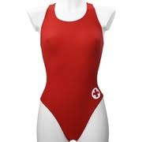
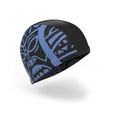
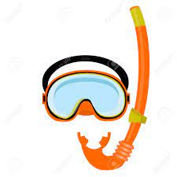
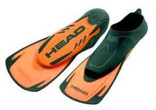
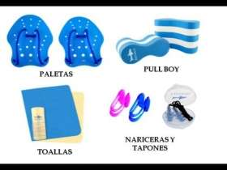

Sobra decir que es necesario, pero no sirve cualquier bañador para practicar la natación. Lo primero que tienes que buscar en un bañador es que te sientas cómodo con él y lo segundo asegurarte que tienes la máxima libertad de movimientos. Lo normal es llevarlo ligeramente ajustado para que el bañador no recoja más agua de lo normal, lo cuál significaría un freno al avance y un mayor esfuerzo. En la actualidad existen una oferta muy amplia de modelos y tejidos (polyester, elastán, lycra, pbt, nylon, poliamida, etc.) que se adaptarán según tu nivel o necesidades. En los primeros 5 años del siglo XXI han proliferado los bañadores elaborados con un determinado porcentaje de teflón y popularizados por los famosos fastskin (piel rápida) de la marca Speedo o los Jetconcept de Adidas.

Las funciones del gorro son varias:
1. Mantiene el pelo fuera de sus ojos, nariz y boca, en el caso de tenerlo largo.
2. Ofrece menos resistencia al avance a causa del pelo, deslizándonos mucho mejor a través del agua.
3. Evita que tu pelo absorba demasiado cloro, con el consiguiente deterioro del cabello Como medida higiénica para otros usuarios y para el mantenimiento de la piscina (filtros, skimers, etc). Identificar a los miembro de un mismo equipo.
En el mercado existen tres opciones: de lycra o tela, de látex y los de silicona. Los de tela suelen estar más indicados para niños debido a que no tiran del pelo, pero su inconveniente es que se quitan muy rápido. Los de látex son baratos pero muy poco resistentes. Y los de silicona son mucho más gruesos, resistentes y duraderos, aunque algo más caros. Sea cual sea tu elección intenta secarlo o aclararlo con agua sin cloro a conciencia cada vez que lo utilices para preservarlo del cloro. Además, para conservar mejor los gorros de látex y silicona, puedes echarles polvos de talco. Por razones higiénicas en la mayoría de piscinas es obligatorio, aunque no en todas, todo depende de la legislación regional en vigor.

La toalla, o en su defecto el albornoz, no debe faltar en la mochila de un nadador. Lo más apropiado es usar toallas de algodón 100%. No dejes la toalla húmeda dentro de la mochila durante mucho tiempo, pues esto facilitará la prolifereción de hongos y bacterias no deseados. Actualmente existen unas mini toallas, generalmente de microfibra, muy similares a las bayetas de cocina, que absorben con rapidez el agua de nuestro cuerpo. Son muy prácticas por su reducido tamaño.
Las gafas tienen varias funciones, la más importante es evitar la irritación de los ojos producida por el cloro de las piscinas o la sal del mar, motivo por el cual su uso se hace muy recomendable para todas las edades. Obviamente el uso de gafas nos permitirá ver bajo el agua y controlar la dirección que deseamos. Si sueles practicar la natación al aire libre, te recomendamos que uses gafas con protección para los rayos UV procedentes del sol.

La oferta en el mercado es muy amplia. Existen de todos los colores, de todas las formas y de todos los tamaños. Existen gafas especiales para niños, para chicos, para chicas, de aficionado, de competición, de piscina, de mar, etc. En la actualidad la parte de la lente se fabrica de policarbonato, mientras que la goma que recubre la lente suele ser de silicona. Muchas marcas comerciales incorporan en sus gafas la etiqueta de "antifog", lo que quiere decir que están tratadas con un producto especial para que no se produzca vaho en su interior una vez puestas.
Complemento indispensable para ir a la piscina, aunque esta idea no es compartida por todo el mundo. Sirve cualquier marca y modelo, siempre y cuando sean de materiales plásticos no porosos y reuna ciertas normas estándares de calidad. Con su uso evitarás, en gran medida, el pie de atleta y otros hongos típicos en piscinas, sin embargo, el uso de chanclas no te asegura una higiene completa del pie. Se recomienda secar los pies de forma concienzuda, especialmente los espacios interdigitales, con una toalla seca.

Son la medida más segura para prevenir infecciones como el famoso pie de atleta. Sin embargo, y a pesar de que algunos fabricantes aseguran que son antideslizantes, la gran variedad de suelos de las piscinas no siempre ofrecen esa garantía cuando están mojados. Otra desventaja de usar este tipo de calcetín es que, al estar fabricado en látex, no son demasiado resistentes y pueden durar poco.
Son muy útiles si tenemos algún problema con los oídos. Se suelen adaptar a la forma del oído para que el agua no entre en él, aunque deberás buscar los más apropiados a tus orejas. Existen multitud de tipos de tapones para usos muy distintos, que van desde la protección contra los ruidos, hasta los que evitan el agua en el oidor Con los primeros no obtendrás resultados en la piscina. Mucha gente, por desconocimiento o falta de información, usan dos clases de tapones poco recomendables para el baño: los de cera (bolas azules o rosas) y los de espuma. Los de cera se moldean bien pero se corre el riesgo de introducirlos demasiado en el oído con el consiguiente peligro; con los de espuma no se evita que entre agua, se mojan y se salen del oidor Además, con cualquiera de estos dos tapones es muy difícil lavarlos y eliminar posibles bacterias que provoquen una infección.
